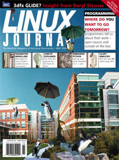

Shutdown Archive web server
Search:
Linux Journal
Issue #73/May 2000

Supplement
Python Supplement
Focus
Programming
by Marjorie Richardson
Features
The Code Analyser LCLint
by David Santo Orcero
Debugging code is never fun, but this tool makes it a bit easier.
Embedding Python in Multi-Threaded C/C++ Applications
by Ivan Pulleyn
Python provides a clean intuitive interface to complex, threaded applications.
X/Motif Programming
by Ibrahim F. Haddad
And God said “Let there be light”!
Parametric Modelling: Killer Apps for Linux Clusters
by David Abramson
Get ready for parallel processing with the University of Michigan.
Forum
An Introduction to PHP3
by John Holland
If you are designing a new web site, this language can provide just the help you need.
Creating Smart Print Queues
by Mark Plimley
This article will help you understand print filters and how to create and install your own personalized filters.
Palm Pilot Development Tools
by Eddie Harari
How to program you hand-held computer using Linux.
Daryl Strauss, Precision Insight
by Steven Pritchard
Want to find out what's happening with 3dfx graphics hardware and the port to Glide? Read on.
Building a Wireless Nework with Linux
by Billy Ball
Want your laptop and PC to talk to each other without having to deal with wires? Here's how.
Linux Webpads Give PC Competition
by Linley Gwennap
New hardware for a new generation.
Reviews
Igel Etherminal J and Instant TC
by David Weis
Moreton Bay PoPToP/NetTEL
by Jon Valesh
Conectiva Linux
by Jason Kroll
The Raritan CompuSwitch
by Alex Heizer
Red Hat Certified Engineer Program (RHCE Exam Cram)
by Andrew G. Feinberg
JavaScript Application Cookbook
by Ralph Krause
Programming Pearls, 2nd Edition
by Harvey Friedman
Columns
Linux Apprentice: Bourne Shell Scripts
Scripting with EX and Here files.
by Randy Parker
Take Command
: xv: The X Viewer
by Marjorie Richardson
When you want to take a quick look at a graphics file, XV is the application to use.
Linux Means Business
Linux Use Rocketing at Jet Propulsion Laboratories
by Drew Robb and Joe Zwers
A look at how JPL scientists are using Linux to build better spacecraft and make accurate calculations.
System Administration
The Linux Trace Toolkit
by Karim Yaghmour and Michel Dagenais
Analyzing performance is one of the most important tasks of a system administrator; here's how to do it using Linux.
Kernel Korner
by Moshe Bar
Linux in Education: Linux at Yorktown High School
How this school is utilizing Linux to teach students, do remote administration and save money.
by Justin Maurer
Cooking with Linux
Rapid Program-Delivery Morsels, RPM
by Marcel Gagné
Installing and upgrading software need not be difficult—Monsieur Gagné tempts us with delectable RPM.
At the Forge
Creating Queries
by Reuven M. Lerner
Games We Play: The New and The Old
by Jason Kroll
Focus on Software
by David A. Bandel
Embedded Systems News Briefs
by Rick Lehrbaum
The Last Word
by Stan Kelly-Bootle
Departments
Letters
More Letters
upFRONT
Penguin's Progress: Getcha Program!
by Peter H. Salus
Linux for Suits
Patent Absurdities
by Doc Searls
Best of Technical Support
New Products
Strictly On-Line
Dynamic Class Loading in C++
by James Norton
A technique for developers that will provide them with much flexibility in design.
WordPerfect for Linux Bible
by Ben Crowder
The Network Block Device
by P.T. Breuer, A. Marín Lopez, Arturo García Ares
Linux Administration for Dummies
by Harvey Friedman
A Real-Time Data Plotting Program
by David Watt
How to program using the Qt windowing system in X.
Shell Functions and Path Variables, Part 3
by Stephen Collyer
Acontinuation of our introduction to path variables and elements.
IBM's Universal Database
by Paul Zikopoulos
Getting DB2 up and running on Linux.
Archive Index
Shutdown Archive web server
Search:
Copyright © 1994 - 2018
Linux Journal
. All rights reserved.